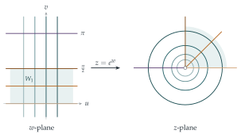

STEP II 1997, Question 5
Read the question before you go on. It is in the STEP Support Programme’s question database: step.maths.org/questions/97-s2-q5
The hook
You know the exponential function as a curve, \(y = e^x\). But a function of a complex variable cannot be drawn as a curve: its input is a point of a plane and so is its output. The way to picture it is as a map, a transformation that moves every point of one plane to a point of another, stretching and bending as it goes.
The formula in the question is \(z = e^{u}(\cos v + \mathrm{i}\sin v) = e^{u + \mathrm{i}v} = e^w\). Seen as a map, the complex exponential does something remarkable: it rolls up a horizontal strip of the plane into a whole plane (minus the origin), wrapping vertical lines round circles and laying horizontal lines out as rays. And because it wraps round, it is not one-to-one: infinitely many points go to each point. This is why the complex logarithm is “multi-valued”, one of the first surprises of complex analysis.
Before you start
What are the modulus and argument of \(z = e^u(\cos v + \mathrm{i}\sin v)\) in terms of \(u\) and \(v\)?
\(|z| = e^u\) and \(\arg z = v\) (up to multiples of \(2\pi\)). So the real part \(u\) of \(w\) controls the distance from the origin, exponentially, and the imaginary part \(v\) controls the direction. That one observation answers almost every part of the question.
Working it through
Stage 1 Solving \(e^w = \mathrm{i}e\)
What are the modulus and argument of \(\mathrm{i}e\)?
\(|\mathrm{i}e| = e\) and \(\arg(\mathrm{i}e) = \frac\pi2\). So we need \(e^u = e\), giving \(u = 1\), and \(v = \frac\pi2 + 2k\pi\) for any integer \(k\). The solutions are \[w = 1 + \mathrm{i}\left(\tfrac\pi2 + 2k\pi\right), \qquad k \in \mathbb{Z}.\] There are infinitely many, spaced \(2\pi\) apart vertically.
Stage 2 The images of grid lines
On a vertical line \(u = c\), \(|z| = e^c\) is fixed while \(v\) varies: the image is the circle of radius \(e^c\) centred at the origin, traced round infinitely often as \(v\) runs over all real numbers.
On a horizontal line \(v = d\), \(\arg z = d\) is fixed while \(|z| = e^u\) takes every positive value: the image is the open ray (half-line) from the origin at angle \(d\), not including the origin itself. Lines \(v = d\) and \(v = d + 2\pi\) give the same ray.

Stage 3 One-to-one pieces
Which points \(w\) map into the first quadrant \(x > 0\), \(y > 0\)? Why is that set too big to be in one-to-one correspondence with the quadrant?
\(z\) is in the open first quadrant exactly when \(\arg z\) is strictly between \(0\) and \(\frac\pi2\) (modulo \(2\pi\)), with any modulus. So \(w\) must satisfy \(0 < v < \frac\pi2\) or \(2\pi < v < \frac{5\pi}{2}\) or …: infinitely many horizontal strips, each of which maps onto the whole quadrant. Any one strip is in one-to-one correspondence with it, since within a strip \(u\) and \(v\) are determined uniquely by \(|z|\) and \(\arg z\). So we can take \[W_1 = \{u + \mathrm{i}v : 0 < v < \tfrac\pi2\}, \qquad W_2 = \{u + \mathrm{i}v : 2\pi < v < \tfrac{5\pi}{2}\}.\]
Now find two sets in the \(w\)-plane in one-to-one correspondence with the punctured disc \(0 < |z| < 1\).
\(|z| < 1\) means \(e^u < 1\), that is \(u < 0\); and every argument must be covered exactly once, so \(v\) should range over an interval of length exactly \(2\pi\), including one end but not the other. For example, \[W_3 = \{u + \mathrm{i}v : u < 0,\ 0 \leq v < 2\pi\}, \qquad W_4 = \{u + \mathrm{i}v : u < 0,\ -\pi < v \leq \pi\}.\] These are half-strips with one edge included and one excluded. (If both edges were included, the points on the positive real axis would be hit twice; if neither, they would be missed.)■
Looking back
Modulus and argument separate the variables. \(|e^w| = e^{\mathrm{Re}\,w}\) and \(\arg e^w = \mathrm{Im}\,w\), so the real and imaginary parts of \(w\) control distance and direction independently.
Picture a complex function as a map. Tracking where grid lines go gives a clear picture of a function that cannot be drawn as a graph.
Periodicity destroys injectivity. \(e^{w + 2\pi\mathrm{i}} = e^w\), so the map is many-to-one, and must be restricted to a strip of height \(2\pi\) to have an inverse.
What’s really going on
On the real line, \(\ln\) is the inverse of \(\exp\). In the complex plane, \(e^w = z\) has infinitely many solutions \(w\) for each \(z \neq 0\), differing by multiples of \(2\pi\mathrm{i}\), so “\(\log z\)” is not a single number. To get a genuine function you must choose a branch, which means choosing a strip like \(W_3\) or \(W_4\): the principal branch takes \(-\pi < \arg z \leq \pi\). Every branch has a jump somewhere, along a ray from the origin called a branch cut. Bernhard Riemann’s resolution, in his thesis of 1851, was to stop insisting that the logarithm lives on a plane: it lives on an infinite spiral staircase, a Riemann surface, on which it is single-valued and smooth. Riemann surfaces are now central to geometry, number theory and string theory.
Angles are preserved
Look again at Figure 5.7.1. The vertical and horizontal grid lines meet at right angles, and so do the circles and rays they become. This is not a coincidence: wherever the derivative of a complex function is non-zero, the function preserves the angles between curves. Such maps are called conformal. Locally, a conformal map is just a rotation and a scaling, which is exactly what multiplication by the complex number \(f'(z)\) does. Conformal maps are used to solve problems in fluid flow, electrostatics and heat conduction, by transforming a complicated region into a simple one where the answer is known.
Mercator’s map
Here is a surprise connecting this section with Section 4.8. Gerardus Mercator’s map of 1569 was designed so that a course of constant compass bearing is a straight line, which requires preserving angles. If you first project the globe stereographically onto a plane (from the north pole), then take the complex logarithm, the result is exactly Mercator’s projection: meridians become vertical lines and lines of latitude become horizontal lines, just as rays and circles become horizontal and vertical lines under \(\log\). The exponential map in this section, run backwards, is the mathematics of the navigator’s chart.
The thinking skill
When a function cannot be drawn as a graph, draw what it does: follow a grid of simple curves and see where they go.
For complex functions, the images of horizontal and vertical lines, or of circles and rays, usually tell the whole story. This way of thinking, about what a map does to shapes, runs through all of geometry and analysis.
Try this next
Solving equations. Find all complex \(w\) with \(e^w = -1\), and all \(w\) with \(e^w = 1 + \mathrm{i}\).
The image of a square. Find and sketch the image under \(z = e^w\) of the square with corners \(0\), \(1\), \(1 + \mathrm{i}\) and \(\mathrm{i}\).
Right angles. Show directly that the circle \(|z| = e^c\) and the ray \(\arg z = d\) meet at right angles, and explain why this is consistent with the lines \(u = c\) and \(v = d\) being perpendicular.
Squaring. Let \(c\) and \(d\) be non-zero real numbers. Find the images of the lines \(x = c\) and \(y = d\) under the map \(z \mapsto z^2\). Show that they are parabolas, and that they meet at right angles wherever they meet. (What happens if \(c = 0\) or \(d = 0\)?)
Further reading
Tristan Needham, Visual Complex Analysis (Oxford University Press). Chapters 2 and 4 treat the exponential, the logarithm and conformal maps with superb pictures.
Hilary Priestley, Introduction to Complex Analysis (Oxford University Press). A clear first undergraduate text.
Ian Stewart & David Tall, Complex Analysis (Cambridge University Press). Another excellent undergraduate introduction, with an emphasis on geometry.